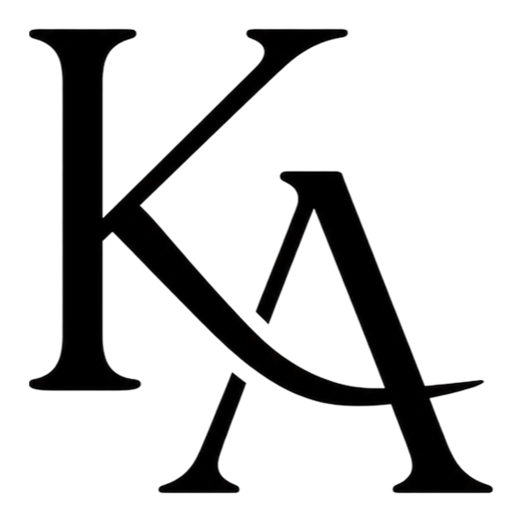

Page not found — Kavin Arulraj

Kavin Arulraj
Graphic Design
Web Design
Video Editing
Portfolio
Pricing
Hire me →
+
4
4
Error 404
This page went to the
cutting room floor
Back to the homepage
See the work